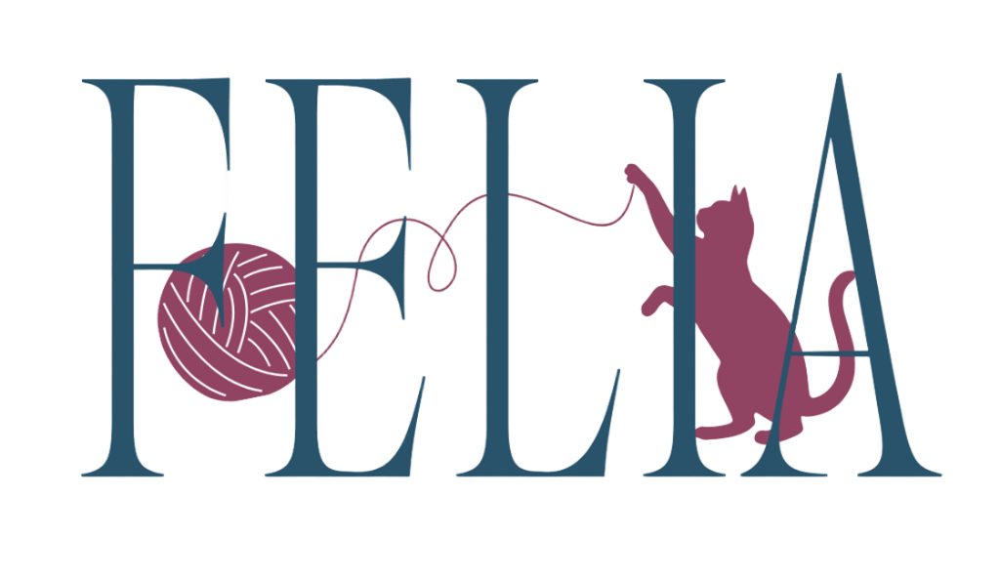

Fim da Caixinha de Transporte
Sem luta para colocar o gato na caixa, sem choros desesperados no carro e sem o estresse do trânsito. O atendimento acontece onde ele dita as regras: na casa dele.
Diga adeus ao estresse da caixinha de transporte e das clínicas agitadas. Oferecemos atendimento veterinário especializado e cat sitting com formação clínica, no território onde seu felino se sente seguro e em paz.

Cuidado Integral FelinoMédica Veterinária Especializada em Felinos (CRMV)
Cat Sitter Profissional e Auxiliar Veterinária
Toque no seu bairro para verificar o atendimento domiciliar prioritário:
Gatos são animais territorialistas por natureza. Tirar o felino do seu território seguro eleva os níveis de cortisol, alterando parâmetros clínicos e gerando traumas desnecessários.
Sem luta para colocar o gato na caixa, sem choros desesperados no carro e sem o estresse do trânsito. O atendimento acontece onde ele dita as regras: na casa dele.
Em clínicas convencionais, salas de espera com cães e odores de outros animais em pânico aterrorizam os felinos. Em domicílio, o ambiente permanece calmo e seguro.
O estresse hospitalar causa hiperglicemia e taquicardia artificiais no gato. Em casa, a pressão arterial, os batimentos e a glicose refletem o estado real de saúde.
Consultas humanizadas de 50 a 80 minutos. Observamos a dinâmica da casa, comedouro, caixa de areia e interação com o tutor, identificando detalhes que clínicas não veem.
Conheça as profissionais dedicadas que vão cuidar da saúde e do bem-estar do seu companheiro em Guarulhos e São Paulo.
Médica Veterinária Especializada em Felinos
Com paixão e prática clínica voltada unicamente à espécie felina, a Dra. Gabriella aplica os protocolos mundiais da ISFM (International Society of Feline Medicine). Cada exame físico é conduzido com paciência, respeitando o tempo de adaptação do animal e priorizando tratamentos minimamente invasivos.
Cat Sitter Profissional & Auxiliar Veterinária
Com formação técnica em auxílio veterinário e vivência constante em rotinas felinas, Giovana assegura que seu gato fique protegido, medicado e amado enquanto você viaja ou trabalha. Diferente de um cuidador comum, ela identifica alterações sutis de apetite, fezes ou postura com olhar técnico preventivo.
Da prevenção básica aos cuidados de pacientes idosos e rotina em viagens. Selecione uma categoria para visualizar:
Avaliação física completa do paciente felino no ambiente dele: peso, mucosas, hidratação, palpação abdominal, ausculta e orientações personalizadas.
Visitas domiciliares de 45 a 60 min enquanto você viaja: higienização de caixas de areia, alimentação fresca, brincadeiras, carinho e fotos/vídeos em tempo real!
Aplicação de vacinas importadas de alta eficácia (V3, V4, V5 e Antirrábica). Protocolos ajustados ao estilo de vida do gato (apartamento ou casa com acesso).
Manejo acolhedor para gatos com Doença Renal Crônica (DRC), diabetes mellitus, hipertensão felina, cardiopatias e positivos para FIV ou FeLV.
Coleta de sangue, urina (cistocentese/urina espontânea), fezes e raspados dermatológicos no aconchego de casa, com transporte refrigerado imediato.
Dificuldade de medicar o bichano? Realizamos aplicação de remédios via oral, colírios, injeções subcutâneas e fluidoterapia sem traumas e com respeito ao felino.
Rastreamento periódico de parâmetros renais, urinários e dentários para diagnosticar alterações silenciosas antes de qualquer complicação.
Consultoria prática em enriquecimento ambiental, introdução pacífica de novos gatos na residência, resolução de problemas de caixa de areia e bem-estar.
Nossa sede operacional fica em Guarulhos, de onde partimos para atender lares em toda a região e bairros estratégicos de São Paulo:
* Mora em outro bairro ou cidade vizinha? Fale conosco pelo WhatsApp para verificar disponibilidade de encaixe na rota do dia.
Levamos todos os equipamentos esterilizados, medicamentos de emergência e balança digital até a sua residência com pontualidade.
Consultar Rota no WhatsAppPreencha o formulário ao lado. Suas informações são organizadas para sincronização com o Google Calendar e direcionadas imediatamente para o nosso atendimento.
Confirmamos o horário com você pelo WhatsApp em poucas horas.
Horários alinhados diretamente na agenda da Dra. Gabriella e da Giovana.
Avaliamos o temperamento e histórico do felino antes de entrar na sua casa.
Você também pode iniciar uma conversa instantânea sem preencher o formulário:
Falar no WhatsApp AgoraVeja a experiência de quem já experimentou o acolhimento domiciliar em Guarulhos e São Paulo.
"Meu gato Fred entrava em desespero toda vez que via a caixa de transporte, ele chegava a vomitar no trânsito. A consulta com a Dra. Gabriella no Bosque Maia foi maravilhosa! Ele foi examinado na caminha dele, sem trauma algum!"
"A Giovana cuidou dos meus dois gatos durante as minhas férias de 10 dias. Como ela é auxiliar de veterinária, viajei em paz sabendo que se houvesse qualquer alteração ela saberia exatamente o que fazer. Recebi fotos e vídeos todos os dias!"
"Fizeram a vacinação dos meus três gatinhos e coleta de exames sem nenhum estresse. As duas são super pontuais, respeitam a linguagem corporal do gato e explicam tudo detalhadamente. Recomendo de olhos fechados!"
Saiba como funciona o agendamento, atendimento em casa e formas de pagamento: